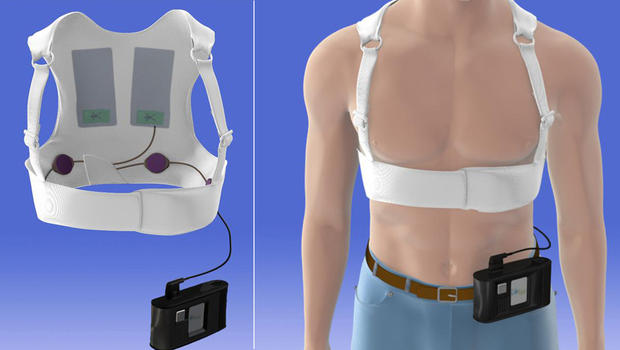

My (evidence-based) approach to post MI VT
Raja Selvaraj, JIPMER
Introduction
Not covering
- Acute management
- non-device management
- non sustained VT
Covering
- Sustained VT late after MI
- severe LV dysfunction
- mild LV dysfunction
- VT/VF early after MI
- within 48 hours
- after 48 hours
Guidelines
- ACC / AHA practice guidelines - 2008 (2012 update)
- ACCF / AHA / HRS Appropriate use criteria 2013
Ventricular arrhythmias early after MI
Scenario
- 36 male
- VF on second day - defibrillated
- LVEF 30%
- No indication as per guidelines
Rationale
- Related to reversible trigger
- Does not affect long term outcome
- ICD implant not indicated on this basis
Not benign !
- AIVR - benign
- Primary VF - poor acute outcome
- But does not impact long term outcome
Fast MI registry - 5 year analysis of outcomes

Higher early mortality
Long term outcome not affected
Appropriate use criteria

Wearable defibrillator

Summary
- Aggressive short term management indicated
- By itself not an indication for ICD implant
- Can consider, especially with reduced EF, especially after revascularization
- Role for wearable defibrillator
VT / VF after 48 hours
- Secondary prevention indication
- Need ICD implantation
- No need to wait for secondary prevention
- Indicator of extensive myocardial damage
- Poor in-hospital outcome and 1 yr survival
Sustained VT late post MI
Scenario
- 48 male
- AWMI 4 years back
- Presents with sustained VT / syncope / cardioversion
- LVEF 35%
Management
- ICD
- Antiarrhythmic drugs / RF ablation ?
- CAG ?
- Single / dual chamber device?
- Single coil / dual coil ?
- Defibrillation threshold testing ?
ICD implantation
- Guidelines
- Class I A - Cardiac arrest due to VF / unstable VT
- Class I B - Stable or unstable VT
Evidence
Ref: Connolly et al. Metaanalysis of ICD secondary prevention trials
CAG
- Polymorphic VT / VF can be due to reversible ischemia
- Sustained monomorphic VT not due to ischemia
- Modest elevation of biomarkers does not indicate ischemia
- Re test after 3 months if possibly reversible after revascularization
Anti-arrhythmic drugs
- ICD does not prevent VT
- ICD is not a treament for VT
- Amiodarone reduces recurrences, low proarrhythmic risk
- But amiodarone doesn't save lives
Ablation
- Significant reduction in recurrences when used as first line
- Superior to AAD with failed amio
- Does not reduce mortality
Ablation as first line
Ablation as first line
Ablation after recurrence on AAD
Ablation after recurrence on AAD

Ablation after recurrence on AAD
Summary
- ICD implantation indicated
- Need AAD / RFA to reduce recurrences
- Amiodarone AAD of choice
- If AAD chosen initially, RFA for recurrence
Sustained VT late post MI with mild LV dysfunction
Scenario 3
- 54 male
- IWMI 6 years back
- walk-in VT
- LVEF 45%
What do the guidelines say?
- Hemodynamically unstable sustained VT / VF - class I A
- Structural heart disease, stable sustained VT - class I B
- Sustained VT with normal or near normal LV function - class IIa C
ICD secondary prevention trials metaanalysis
- 29 implants to save one life per year of follow up
- Benefit after 3 years?
- Increase in survival by 1/3 years after 6 years of follow up
Importance of EF
Beta blockers in secondary prevention
Ref: Connolly et al. Metaanalysis of ICD secondary prevention trials
Appropriate use criteria
Summary - My approach
- Remote MI, severe LV dysfunction, VT/VF - ICD
- Remote MI, moderate LV dysfunction, VT - AAD / abl, ICD
- Reducing recurrence - AAD as first line
- Recurrence on AAD - Ablation rather than escalate
- Lot of grey areas, weigh evidence, involve patient in decision making